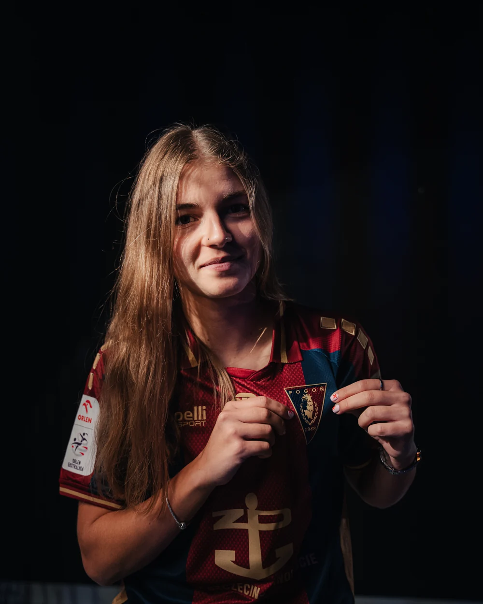

VERO FOOTBALL AGENCY / PLAYER CV / UPDATED 3 OCT 2026
Griselda Tsela
Central Midfielder · Pogoń Szczecin

01 / PROFILEPLAYER
Griselda Tsela is represented by VERO Football Agency. Central Midfielder at Pogoń Szczecin.
- Position
- Central Midfielder
- Current club
- Pogoń Szczecin
- Nationality
- Greece
- Date of birth
- 3 August 2008
- International record
- Greece senior / U19
- Club country
- Poland
02 / CAREER
CLUB RECORD.
Selected career entries. Current club and playing positions confirmed by VERO; historical records drawn from the sources below.
| PERIOD | CLUB / TEAM |
|---|---|
| Current | Pogoń Szczecin |
| Before 2026 | OFI Crete |
03 / PUBLIC RECORDS
CHECK THE
SOURCE.
Records checked 3 October 2026. External databases may show a former club. Unverified biographical details and statistics are omitted.
Photo: Pogoń Szczecin signing announcement
04 / PROFESSIONAL ENQUIRIES
LET’S TALK FOOTBALL.
For professional enquiries regarding Griselda Tsela, contact VERO directly.